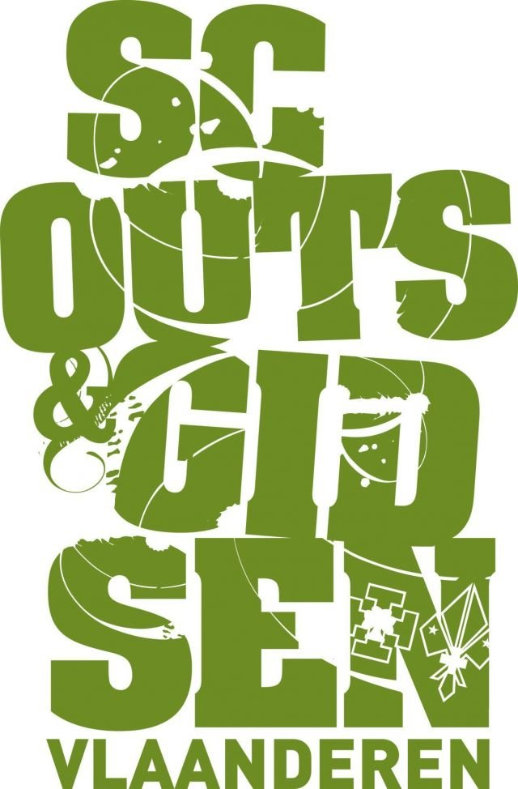

Welkom!

Iedere jeugdbeweging heeft haar eigen kenmerken en tradities, maar ze hebben allemaal iets gemeen. Elke jeugdbeweging wordt gekenmerkt door een lange en boeiende geschiedenis. Via deze pagina laten we je kennis maken met deze rijke geschiedenis. Hier vind je voor ieder wat wils!
1. Spelbord: Leer op een speelse wijze de geschiedenis kennen van jeugdbewegingen in Vlaanderen en de geschiedenis van de jouwe.
2. Erf-goed of erf-slecht?: Weet jij wat er wel of niet goed is om erfgoed te bewaren? Test het in de quiz!
3. Spelletjesmachine: Heb je geen inspiratie voor een pleinspel of heb je gewoon zin om je eventjes los te gaan! Klik op deze machine en krijg een willekeurig spelletje uit de oude doos.
4. Quiz: Test je kennis over de geschiedenis van de jeugdbewegingen!
5. Weetjes: Ben jij de weetjes-man/vrouw van de groep? Heb je nog nood aan meer kennis? Dan is deze pagina zeker iets voor jou!
6. Gesprekkenmachine: Geen gespreksonderwerpen meer of een gespreksonderwerp nodig voor een gezellige avond? Gebruik dan deze machine! Jullie zijn gegarandeerd vertrokken voor een lang en boeiend gesprek!
Werkgroep jeugdbewegingen en erfgoed
Sinds 1 juli 2024 zijn Vlaamse jeugdbewegingen erkend als immaterieel erfgoed. Een belangrijke mijlpaal in het bewaren en doorgeven van dit springlevende erfgoed. Achter deze werking bevindt zich de werkgroep Jeugdbewegingen en Erfgoed. Dit is een samenwerking tussen Histories vzw en de Vlaamse jeugdbewegingen (Scouts en Gidsen Vlaanderen, KSA, KLJ, Kamino, JNM, JRK, FOS Open Scouting, EJV en Chiro.
Wil je meer weten? Download dan onze brochure en ontrafel het verleden van jouw groep.